S.I. 7 Codebook
This chapter displays the codebook for the data set of Study 2, generated using the R package “codebook”.
7.0.1 Metadata
7.0.1.1 Description
Dataset name: d2
The dataset has N=1279 rows and 36 columns. 0 rows have no missing values on any column.
Metadata for search engines
Date published: 2020-06-03
- keywords: responseid, imp_accept, other_accept, self_accept, r10panelpad, opinion_ban, opinion_strength, video_mobile, video_ended, video_error, video_paused, video_played, video_timespent, video_report, r10pad4_comment, fairness, accept, trust, check_outcome, check_politician, r10pad1_9_backward_1, r10pad1_9_backward_2, r10pad1_9_backward_3, r10pad1_9_backward_4, r10pad1_9_backward_5, r10pad1_9_backward_6, r10pad1_9_backward_7, r10pad1_9_backward_8, video, treatment, favorability, mcheck_favorability, imp_accept2, other_accept2, self_accept2 and opinion_strength2
7.1 Variables
7.1.1 responseid
7.1.1.1 Distribution
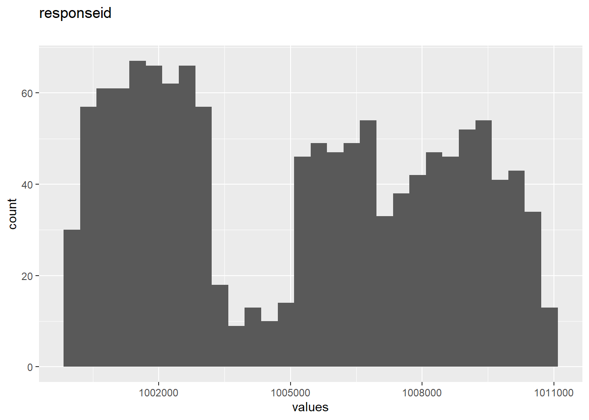
0 missing values.
7.1.1.2 Summary statistics
| name | data_type | n_missing | complete_rate | min | median | max | mean | sd | hist | format.spss | label |
|---|---|---|---|---|---|---|---|---|---|---|---|
| responseid | numeric | 0 | 1 | 1e+06 | 1e+06 | 1e+06 | 1005121 | 3326 | ▇▅▅▆▆ | F8.2 | NA |
7.1.2 imp_accept
How important is it to accept decisions about important social issues adopted by politicians/authorities
7.1.2.1 Distribution
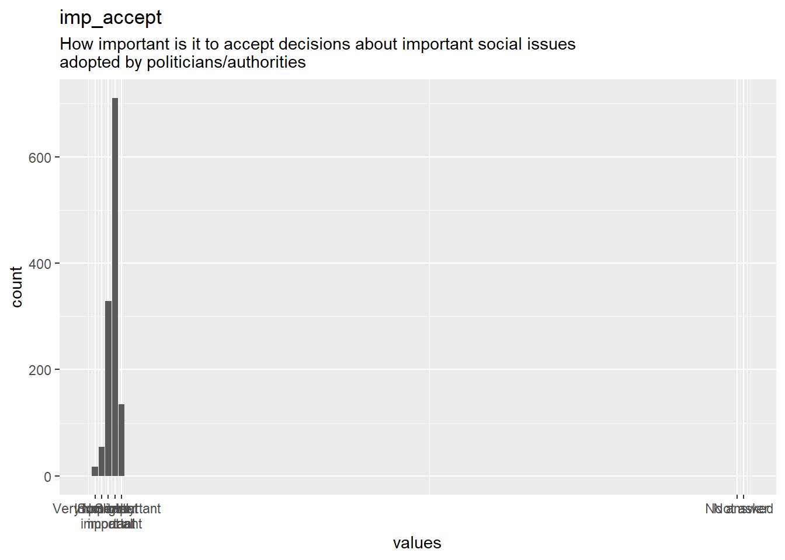
34 missing values.
7.1.2.2 Summary statistics
| name | label | data_type | value_labels | n_missing | complete_rate | min | median | max | mean | sd | n_value_labels | hist | format.spss |
|---|---|---|---|---|---|---|---|---|---|---|---|---|---|
| imp_accept | How important is it to accept decisions about important social issues adopted by politicians/authorities | haven_labelled |
|
34 | 0.9734 | 1 | 4 | 5 | 3.716 | 0.7676 | 7 | ▁▁▁▃▁▇▁▂ | F8.2 |
7.1.2.3 Value labels
- Very important: 1
- Important: 2
- Somewhat important: 3
- Slightly important: 4
- Not important at all: 5
- No answer: 97
- Not asked: 98
7.1.3 other_accept
To what extent do people in Norway accept decisions about important social issues adopted by politicians/authorities
7.1.3.1 Distribution
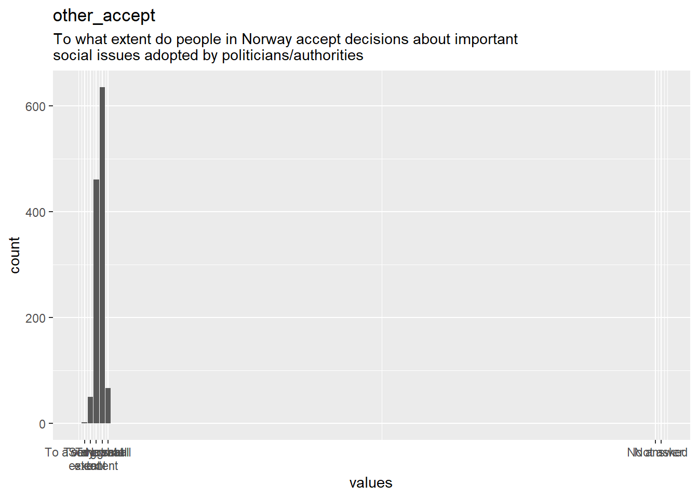
65 missing values.
7.1.3.2 Summary statistics
| name | label | data_type | value_labels | n_missing | complete_rate | min | median | max | mean | sd | n_value_labels | hist | format.spss |
|---|---|---|---|---|---|---|---|---|---|---|---|---|---|
| other_accept | To what extent do people in Norway accept decisions about important social issues adopted by politicians/authorities | haven_labelled |
|
65 | 0.9492 | 1 | 4 | 5 | 3.587 | 0.6661 | 7 | ▁▁▁▆▁▇▁▁ | F8.2 |
7.1.3.3 Value labels
- To a very great extent: 1
- To a great extent: 2
- Somewhat: 3
- To a small extent: 4
- Not at all: 5
- No answer: 97
- Not asked: 98
7.1.4 self_accept
Do you accept decisions about important social issues adopted by politicians/authorities?
7.1.4.1 Distribution
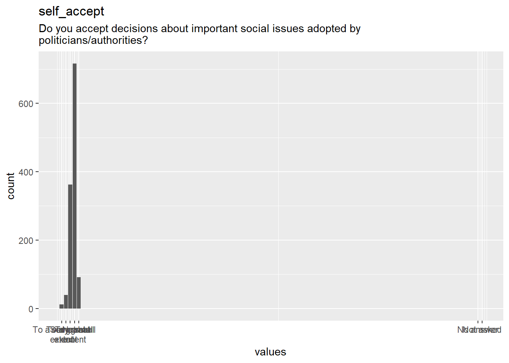
59 missing values.
7.1.4.2 Summary statistics
| name | label | data_type | value_labels | n_missing | complete_rate | min | median | max | mean | sd | n_value_labels | hist | format.spss |
|---|---|---|---|---|---|---|---|---|---|---|---|---|---|
| self_accept | Do you accept decisions about important social issues adopted by politicians/authorities? | haven_labelled |
|
59 | 0.9539 | 1 | 4 | 5 | 3.684 | 0.6989 | 7 | ▁▁▁▅▁▇▁▁ | F8.2 |
7.1.4.3 Value labels
- To a very great extent: 1
- To a great extent: 2
- Somewhat: 3
- To a small extent: 4
- Not at all: 5
- No answer: 97
- Not asked: 98
7.1.5 r10panelpad
[Defines sub-group: panelpad. These are respondents who have responded to R9PAD1-3 but where u!=4]
7.1.5.1 Distribution
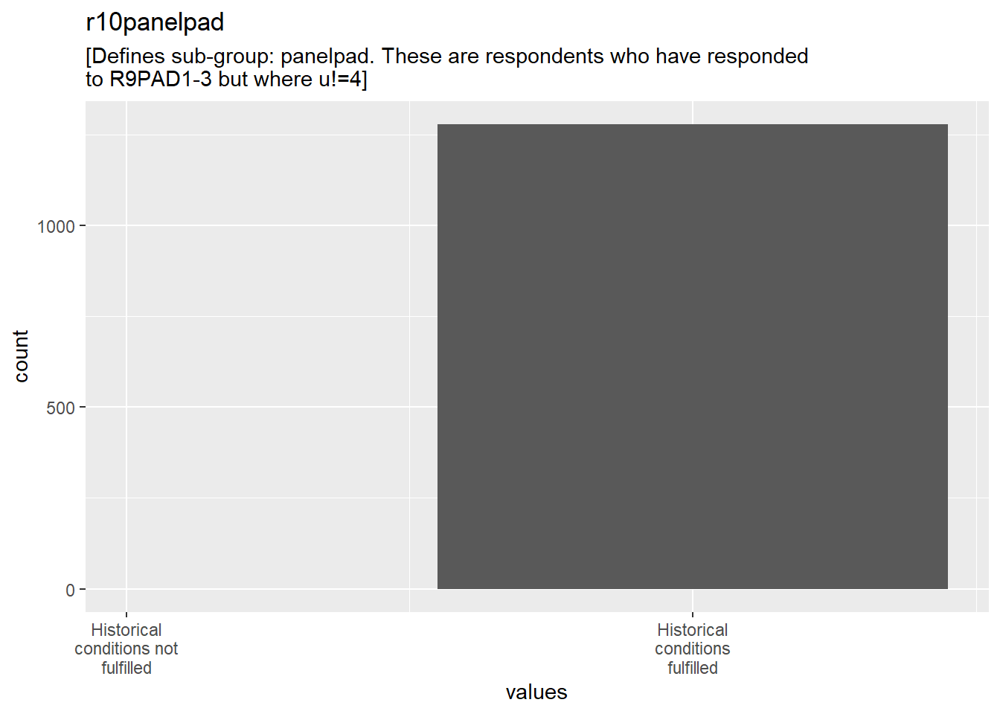
0 missing values.
7.1.5.2 Summary statistics
| name | label | data_type | value_labels | n_missing | complete_rate | min | median | max | mean | sd | n_value_labels | hist | format.spss |
|---|---|---|---|---|---|---|---|---|---|---|---|---|---|
| r10panelpad |
[Defines sub-group: panelpad. These are respondents who have responded to R9PAD1-3 but where u!=4]
|
haven_labelled |
|
0 | 1 | 1 | 1 | 1 | 1 | 0 | 2 | ▁▁▁▇▁▁▁▁ | F8.2 |
7.1.5.3 Value labels
- Historical conditions not fulfilled: 0
- Historical conditions fulfilled: 1
7.1.6 opinion_ban
7.1.6.1 Distribution
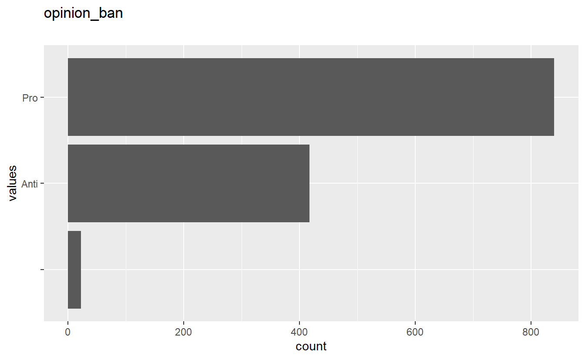
0 missing values.
7.1.6.2 Summary statistics
| name | data_type | n_missing | complete_rate | n_unique | empty | min | max | whitespace | format.spss | label |
|---|---|---|---|---|---|---|---|---|---|---|
| opinion_ban | character | 0 | 1 | 3 | 22 | 0 | 4 | 0 | A4 | NA |
7.1.7 opinion_strength
How important is a begging ban for you.
7.1.7.1 Distribution
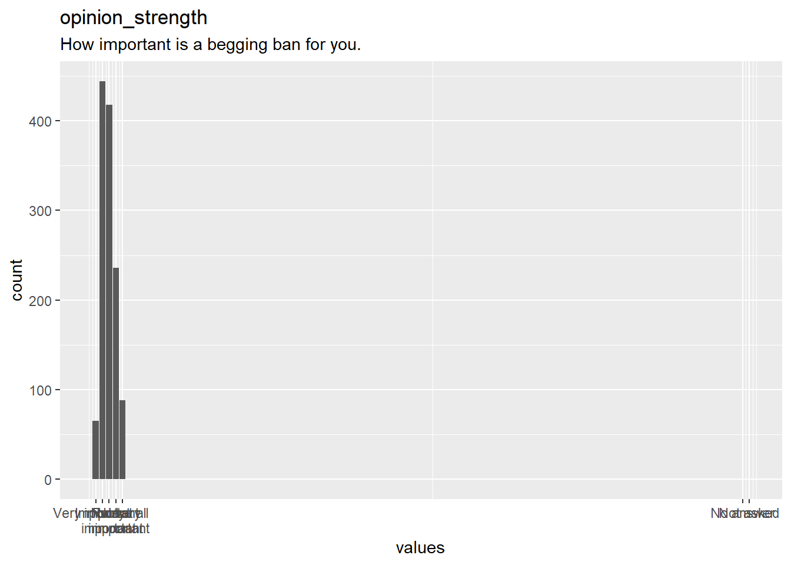
28 missing values.
7.1.7.2 Summary statistics
| name | label | data_type | value_labels | n_missing | complete_rate | min | median | max | mean | sd | n_value_labels | hist | format.spss |
|---|---|---|---|---|---|---|---|---|---|---|---|---|---|
| opinion_strength | How important is a begging ban for you. | haven_labelled |
|
28 | 0.9781 | 1 | 3 | 5 | 2.87 | 1.008 | 7 | ▁▇▁▇▁▅▁▂ | F8.2 |
7.1.7.3 Value labels
- Very important: 1
- Important: 2
- Fairly important: 3
- Not very important: 4
- Not at all important: 5
- No answer: 97
- Not asked: 98
7.1.8 video_mobile
[Asked if panelPAD=1. Background variable for r10pad3 (video). Detects whether or not the respondent is using a mobile device]
7.1.8.1 Distribution
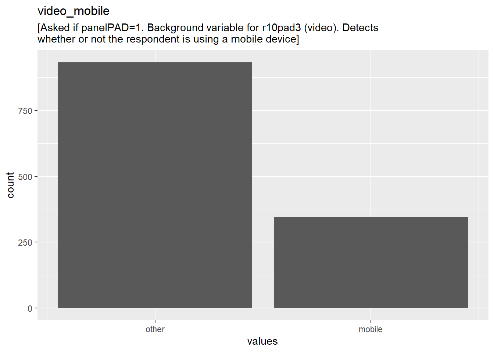
0 missing values.
7.1.8.2 Summary statistics
| name | label | data_type | value_labels | n_missing | complete_rate | min | median | max | mean | sd | n_value_labels | hist | format.spss |
|---|---|---|---|---|---|---|---|---|---|---|---|---|---|
| video_mobile |
[Asked if panelPAD=1. Background variable for r10pad3 (video). Detects whether or not the respondent is using a mobile device]
|
haven_labelled |
|
0 | 1 | 0 | 0 | 1 | 0.2705 | 0.4444 | 2 | ▇▁▁▁▁▁▁▃ | F8.2 |
7.1.8.3 Value labels
- other: 0
- mobile: 1
7.1.9 video_ended
[Asked if panelPAD=1. Background variable for r10pad3 (video). Counter for the event “video ended”]
7.1.9.1 Distribution
490 missing values.
7.1.9.2 Summary statistics
| name | label | data_type | n_missing | complete_rate | min | median | max | mean | sd | hist | format.spss |
|---|---|---|---|---|---|---|---|---|---|---|---|
| video_ended |
[Asked if panelPAD=1. Background variable for r10pad3 (video). Counter for the event “video ended”]
|
numeric | 490 | 0.6169 | 1 | 1 | 4 | 1.155 | 0.4321 | ▇▁▁▁▁ | F20.0 |
7.1.10 video_error
[Asked if panelPAD=1. Background variable for r10pad3 (video). Counter for the event “video error”]
7.1.10.1 Distribution
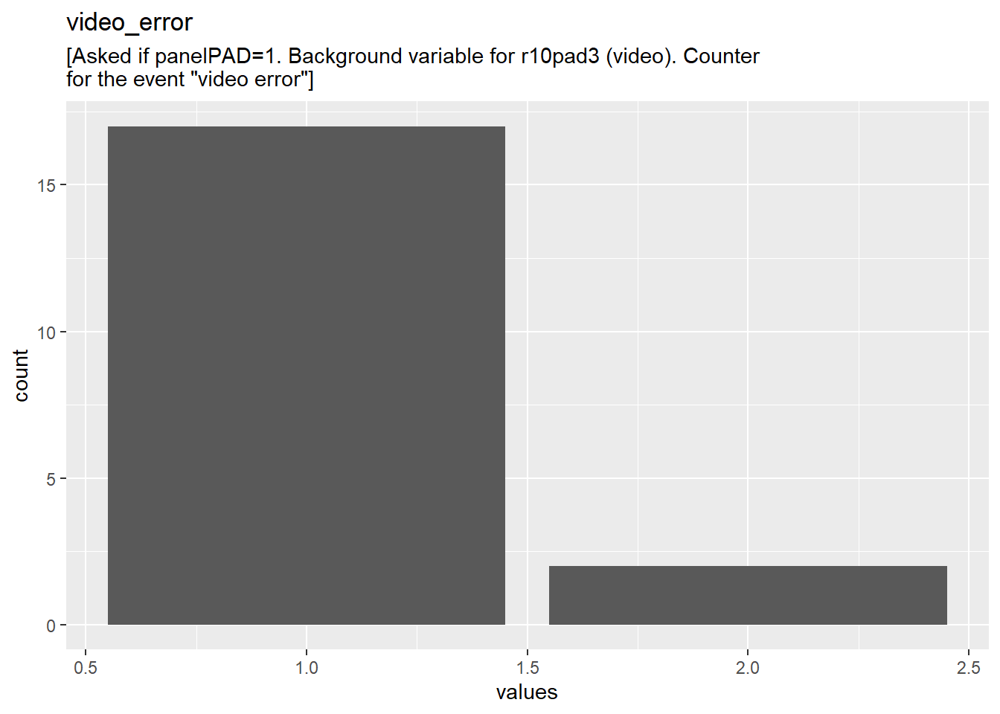
1260 missing values.
7.1.10.2 Summary statistics
| name | label | data_type | n_missing | complete_rate | min | median | max | mean | sd | hist | format.spss |
|---|---|---|---|---|---|---|---|---|---|---|---|
| video_error |
[Asked if panelPAD=1. Background variable for r10pad3 (video). Counter for the event “video error”]
|
numeric | 1260 | 0.0149 | 1 | 1 | 2 | 1.105 | 0.3153 | ▇▁▁▁▁ | F20.0 |
7.1.11 video_paused
[Asked if panelPAD=1. Background variable for r10pad3 (video). Counter for the event “video paused”]
7.1.11.1 Distribution
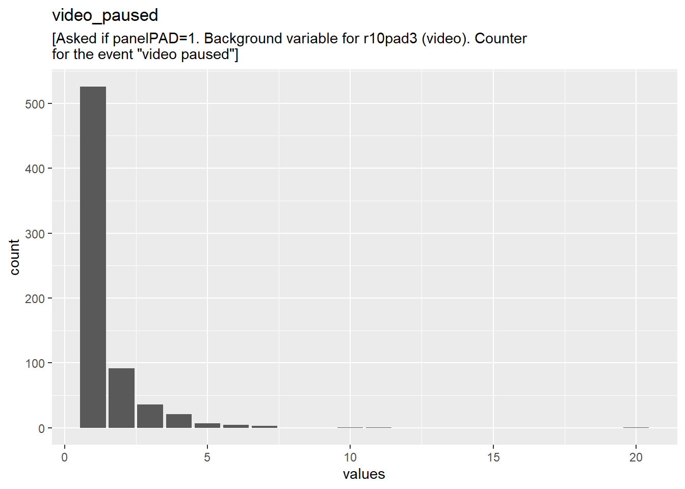
586 missing values.
7.1.11.2 Summary statistics
| name | label | data_type | n_missing | complete_rate | min | median | max | mean | sd | hist | format.spss |
|---|---|---|---|---|---|---|---|---|---|---|---|
| video_paused |
[Asked if panelPAD=1. Background variable for r10pad3 (video). Counter for the event “video paused”]
|
numeric | 586 | 0.5418 | 1 | 1 | 20 | 1.485 | 1.289 | ▇▁▁▁▁ | F20.0 |
7.1.12 video_played
[Asked if panelPAD=1. Background variable for r10pad3 (video). Counter for the event “video played”]
7.1.12.1 Distribution
446 missing values.
7.1.12.2 Summary statistics
| name | label | data_type | n_missing | complete_rate | min | median | max | mean | sd | hist | format.spss |
|---|---|---|---|---|---|---|---|---|---|---|---|
| video_played |
[Asked if panelPAD=1. Background variable for r10pad3 (video). Counter for the event “video played”]
|
numeric | 446 | 0.6513 | 1 | 1 | 20 | 1.575 | 1.485 | ▇▁▁▁▁ | F20.0 |
7.1.13 video_timespent
[Asked if panelPAD=1. Background variable for r10pad3 (video). Calculated time spent in the video node]
7.1.13.1 Distribution
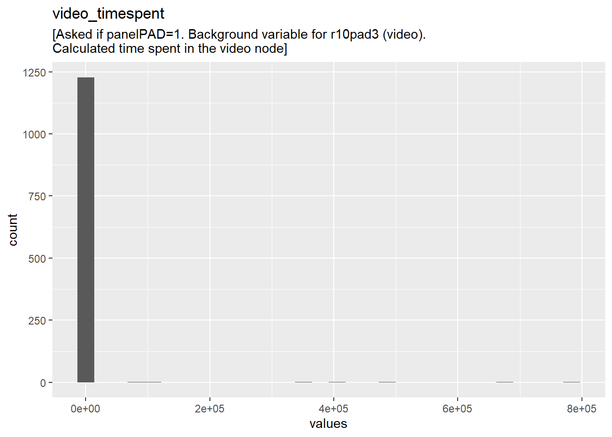
44 missing values.
7.1.13.2 Summary statistics
| name | label | data_type | n_missing | complete_rate | min | median | max | mean | sd | hist | format.spss |
|---|---|---|---|---|---|---|---|---|---|---|---|
| video_timespent |
[Asked if panelPAD=1. Background variable for r10pad3 (video). Calculated time spent in the video node]
|
numeric | 44 | 0.9656 | 2 | 110 | 783439 | 2515 | 36326 | ▇▁▁▁▁ | F20.0 |
7.1.14 video_report
What was the recording like?
7.1.14.1 Distribution
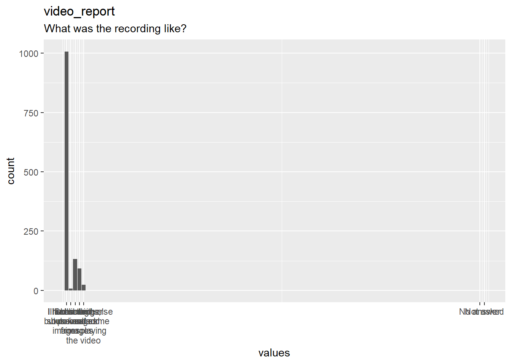
16 missing values.
7.1.14.2 Summary statistics
| name | label | data_type | value_labels | n_missing | complete_rate | min | median | max | mean | sd | n_value_labels | hist | format.spss |
|---|---|---|---|---|---|---|---|---|---|---|---|---|---|
| video_report | What was the recording like? | haven_labelled |
|
16 | 0.9875 | 1 | 1 | 5 | 1.51 | 1.061 | 7 | ▇▁▁▁▁▁▁▁ | F8.2 |
7.1.14.3 Value labels
- I had both sound and images: 1
- I had sound, but no images: 2
- I had images, but no sound: 3
- I had neither sound nor images: 4
- Something else prevented me from playing the video: 5
- No answer: 97
- Not asked: 98
7.1.15 r10pad4_comment
Comments about the recording. [Data withheld for the sake of anonymity]
7.1.15.1 Distribution
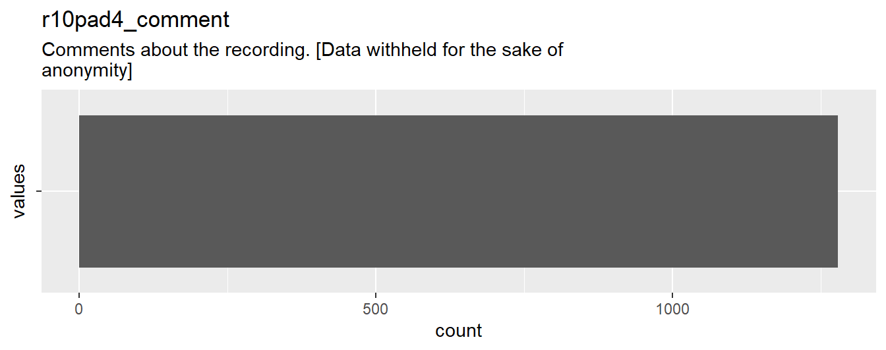
0 missing values.
7.1.15.2 Summary statistics
| name | label | data_type | n_missing | complete_rate | n_unique | empty | min | max | whitespace | format.spss | display_width |
|---|---|---|---|---|---|---|---|---|---|---|---|
| r10pad4_comment | Comments about the recording. [Data withheld for the sake of anonymity] | character | 0 | 1 | 1 | 1279 | 0 | 0 | 0 | A1 | 1 |
7.1.16 fairness
How fair was the way the decision was made.
7.1.16.1 Distribution
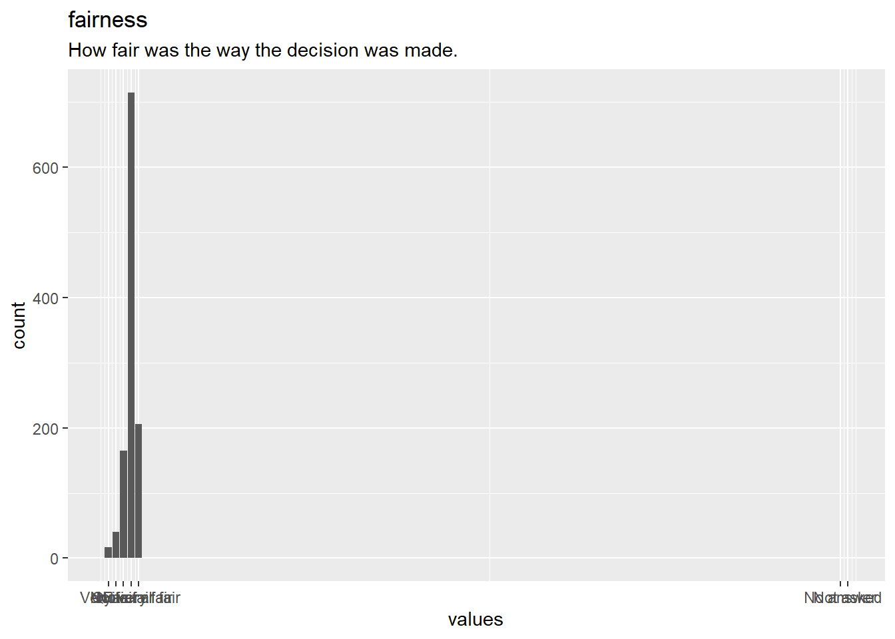
137 missing values.
7.1.16.2 Summary statistics
| name | label | data_type | value_labels | n_missing | complete_rate | min | median | max | mean | sd | n_value_labels | hist | format.spss |
|---|---|---|---|---|---|---|---|---|---|---|---|---|---|
| fairness | How fair was the way the decision was made. | haven_labelled |
|
137 | 0.8929 | 1 | 4 | 5 | 3.921 | 0.7702 | 7 | ▁▁▁▂▁▇▁▂ | F8.2 |
7.1.16.3 Value labels
- Very fair: 1
- Fair: 2
- Quite fair: 3
- Not very fair: 4
- Not at all fair: 5
- No answer: 97
- Not asked: 98
7.1.17 accept
How willing are you to accept the outcome of the decision.
7.1.17.1 Distribution
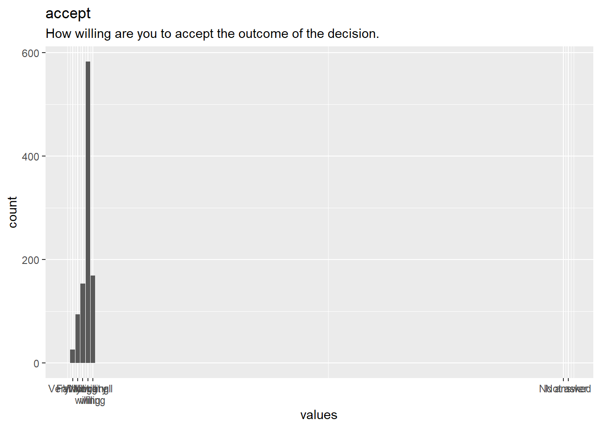
253 missing values.
7.1.17.2 Summary statistics
| name | label | data_type | value_labels | n_missing | complete_rate | min | median | max | mean | sd | n_value_labels | hist | format.spss |
|---|---|---|---|---|---|---|---|---|---|---|---|---|---|
| accept | How willing are you to accept the outcome of the decision. | haven_labelled |
|
253 | 0.8022 | 1 | 4 | 5 | 3.755 | 0.9221 | 7 | ▁▁▁▂▁▇▁▂ | F8.2 |
7.1.17.3 Value labels
- Very willing: 1
- Willing: 2
- Fairly willing: 3
- Not very willing: 4
- Not at all willing: 5
- No answer: 97
- Not asked: 98
7.1.18 trust
Confidence in the politicians making the decision.
7.1.18.1 Distribution
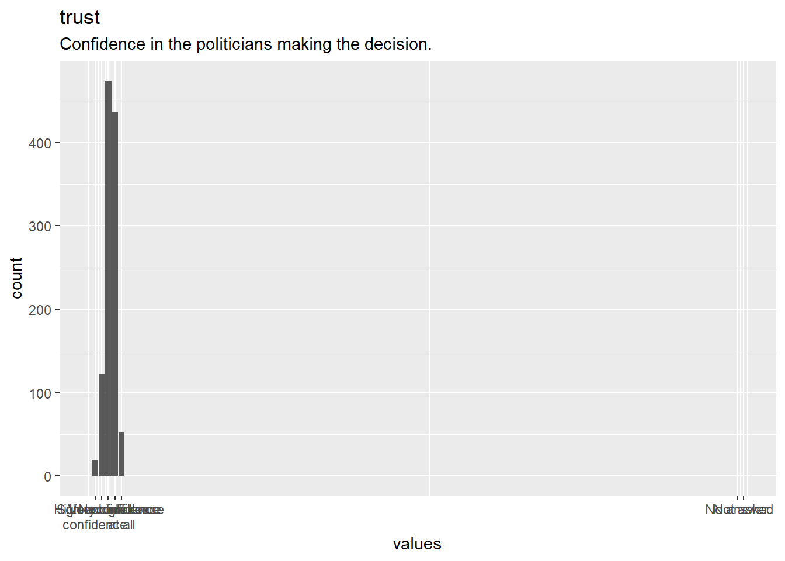
176 missing values.
7.1.18.2 Summary statistics
| name | label | data_type | value_labels | n_missing | complete_rate | min | median | max | mean | sd | n_value_labels | hist | format.spss |
|---|---|---|---|---|---|---|---|---|---|---|---|---|---|
| trust | Confidence in the politicians making the decision. | haven_labelled |
|
176 | 0.8624 | 1 | 3 | 5 | 3.345 | 0.8033 | 7 | ▁▂▁▇▁▇▁▁ | F8.2 |
7.1.18.3 Value labels
- Very high confidence: 1
- High confidence: 2
- Some confidence: 3
- Low confidence: 4
- No confidence at all: 5
- No answer: 97
- Not asked: 98
7.1.19 check_outcome
Outcome in video in line with own view on municipal begging ban.
7.1.19.1 Distribution
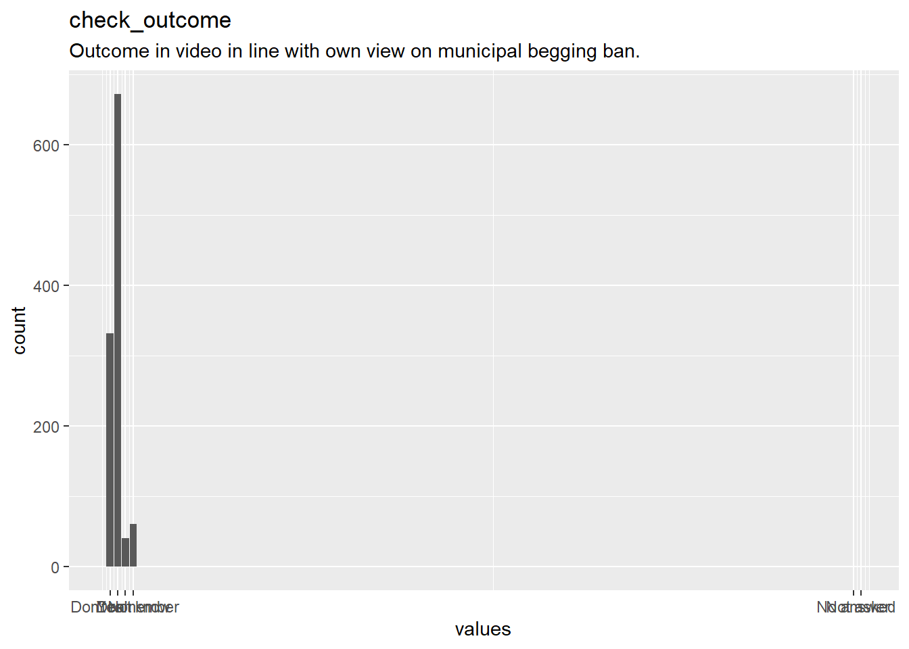
173 missing values.
7.1.19.2 Summary statistics
| name | label | data_type | value_labels | n_missing | complete_rate | min | median | max | mean | sd | n_value_labels | hist | format.spss |
|---|---|---|---|---|---|---|---|---|---|---|---|---|---|
| check_outcome | Outcome in video in line with own view on municipal begging ban. | haven_labelled |
|
173 | 0.8647 | 1 | 2 | 4 | 1.847 | 0.7314 | 6 | ▃▁▇▁▁▁▁▁ | F8.2 |
7.1.19.3 Value labels
- Yes: 1
- No: 2
- Don’t remember: 3
- Don’t know: 4
- No answer: 97
- Not asked: 98
7.1.20 check_politician
Picture included at the end of video.
7.1.20.1 Distribution
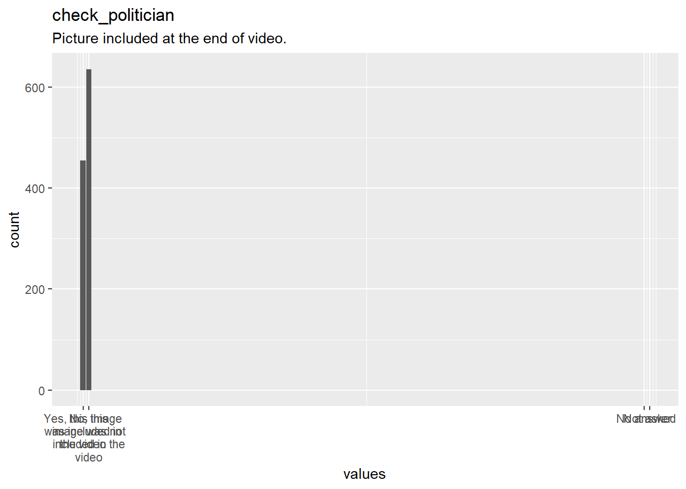
190 missing values.
7.1.20.2 Summary statistics
| name | label | data_type | value_labels | n_missing | complete_rate | min | median | max | mean | sd | n_value_labels | hist | format.spss |
|---|---|---|---|---|---|---|---|---|---|---|---|---|---|
| check_politician | Picture included at the end of video. | haven_labelled |
|
190 | 0.8514 | 1 | 2 | 2 | 1.583 | 0.4933 | 4 | ▆▁▁▁▁▁▁▇ | F8.2 |
7.1.20.3 Value labels
- Yes, this image was included in the video: 1
- No, this image was not included in the video: 2
- No answer: 97
- Not asked: 98
7.1.21 r10pad1_9_backward_1
Return button used: R10PAD9 -> R10PAD8
7.1.21.1 Distribution
1143 missing values.
7.1.21.2 Summary statistics
| name | label | data_type | value_labels | n_missing | complete_rate | min | median | max | mean | sd | n_value_labels | hist | format.spss |
|---|---|---|---|---|---|---|---|---|---|---|---|---|---|
| r10pad1_9_backward_1 | Return button used: R10PAD9 -> R10PAD8 | haven_labelled |
|
1143 | 0.1063 | 1 | 1 | 1 | 1 | 0 | 1 | ▁▁▁▇▁▁▁▁ | F8.2 |
7.1.21.3 Value labels
- Yes, return button used from R10PAD9 -> R10PAD8 : 1
7.1.22 r10pad1_9_backward_2
Return button used: R10PAD8 -> R10PAD7
7.1.22.1 Distribution
1109 missing values.
7.1.22.2 Summary statistics
| name | label | data_type | value_labels | n_missing | complete_rate | min | median | max | mean | sd | n_value_labels | hist | format.spss |
|---|---|---|---|---|---|---|---|---|---|---|---|---|---|
| r10pad1_9_backward_2 | Return button used: R10PAD8 -> R10PAD7 | haven_labelled |
|
1109 | 0.1329 | 1 | 1 | 1 | 1 | 0 | 1 | ▁▁▁▇▁▁▁▁ | F8.2 |
7.1.22.3 Value labels
- Yes, return button used from R10PAD8 -> R10PAD7: 1
7.1.23 r10pad1_9_backward_3
Return button used: R10PAD7 -> R10PAD6
7.1.23.1 Distribution
1083 missing values.
7.1.23.2 Summary statistics
| name | label | data_type | value_labels | n_missing | complete_rate | min | median | max | mean | sd | n_value_labels | hist | format.spss |
|---|---|---|---|---|---|---|---|---|---|---|---|---|---|
| r10pad1_9_backward_3 | Return button used: R10PAD7 -> R10PAD6 | haven_labelled |
|
1083 | 0.1532 | 1 | 1 | 1 | 1 | 0 | 1 | ▁▁▁▇▁▁▁▁ | F8.2 |
7.1.23.3 Value labels
- Yes, return button used from R10PAD7 -> R10PAD6 : 1
7.1.24 r10pad1_9_backward_4
Return button used: R10PAD6 -> R10PAD5
7.1.24.1 Distribution
1150 missing values.
7.1.24.2 Summary statistics
| name | label | data_type | value_labels | n_missing | complete_rate | min | median | max | mean | sd | n_value_labels | hist | format.spss |
|---|---|---|---|---|---|---|---|---|---|---|---|---|---|
| r10pad1_9_backward_4 | Return button used: R10PAD6 -> R10PAD5 | haven_labelled |
|
1150 | 0.1009 | 1 | 1 | 1 | 1 | 0 | 1 | ▁▁▁▇▁▁▁▁ | F8.2 |
7.1.24.3 Value labels
- Yes, return button used from R10PAD6 -> R10PAD5: 1
7.1.25 r10pad1_9_backward_5
Return button used: R10PAD5 -> R10PAD4
7.1.25.1 Distribution

1135 missing values.
7.1.25.2 Summary statistics
| name | label | data_type | value_labels | n_missing | complete_rate | min | median | max | mean | sd | n_value_labels | hist | format.spss |
|---|---|---|---|---|---|---|---|---|---|---|---|---|---|
| r10pad1_9_backward_5 | Return button used: R10PAD5 -> R10PAD4 | haven_labelled |
|
1135 | 0.1126 | 1 | 1 | 1 | 1 | 0 | 1 | ▁▁▁▇▁▁▁▁ | F8.2 |
7.1.25.3 Value labels
- Yes, return button used from R10PAD5 -> R10PAD4: 1
7.1.26 r10pad1_9_backward_6
Return button used: R10PAD4 -> R10PAD3
7.1.26.1 Distribution

1115 missing values.
7.1.26.2 Summary statistics
| name | label | data_type | value_labels | n_missing | complete_rate | min | median | max | mean | sd | n_value_labels | hist | format.spss |
|---|---|---|---|---|---|---|---|---|---|---|---|---|---|
| r10pad1_9_backward_6 | Return button used: R10PAD4 -> R10PAD3 | haven_labelled |
|
1115 | 0.1282 | 1 | 1 | 1 | 1 | 0 | 1 | ▁▁▁▇▁▁▁▁ | F8.2 |
7.1.26.3 Value labels
- Yes, return button used from R10PAD4 -> R10PAD3: 1
7.1.27 r10pad1_9_backward_7
Return button used: R10PAD3 -> R10PAD2
7.1.27.1 Distribution
1184 missing values.
7.1.27.2 Summary statistics
| name | label | data_type | value_labels | n_missing | complete_rate | min | median | max | mean | sd | n_value_labels | hist | format.spss |
|---|---|---|---|---|---|---|---|---|---|---|---|---|---|
| r10pad1_9_backward_7 | Return button used: R10PAD3 -> R10PAD2 | haven_labelled |
|
1184 | 0.0743 | 1 | 1 | 1 | 1 | 0 | 1 | ▁▁▁▇▁▁▁▁ | F8.2 |
7.1.27.3 Value labels
- Yes, return button used from R10PAD3 -> R10PAD2 : 1
7.1.28 r10pad1_9_backward_8
Return button used: R10PAD2 -> R10PAD1
7.1.28.1 Distribution
1200 missing values.
7.1.28.2 Summary statistics
| name | label | data_type | value_labels | n_missing | complete_rate | min | median | max | mean | sd | n_value_labels | hist | format.spss |
|---|---|---|---|---|---|---|---|---|---|---|---|---|---|
| r10pad1_9_backward_8 | Return button used: R10PAD2 -> R10PAD1 | haven_labelled |
|
1200 | 0.0618 | 1 | 1 | 1 | 1 | 0 | 1 | ▁▁▁▇▁▁▁▁ | F8.2 |
7.1.28.3 Value labels
- Yes, return button used from R10PAD2 -> R10PAD1: 1
7.1.29 video
7.1.29.1 Distribution
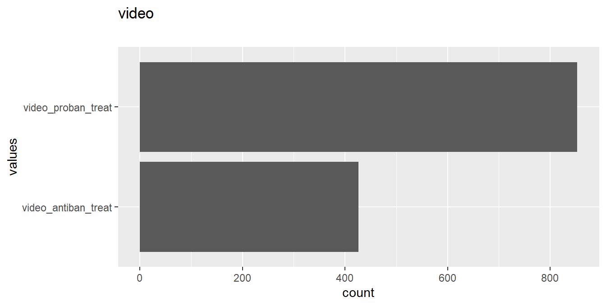
0 missing values.
7.1.29.2 Summary statistics
| name | data_type | n_missing | complete_rate | n_unique | empty | min | max | whitespace | format.spss | label |
|---|---|---|---|---|---|---|---|---|---|---|
| video | character | 0 | 1 | 2 | 0 | 18 | 19 | 0 | A19 | NA |
7.1.30 treatment
7.1.30.1 Distribution
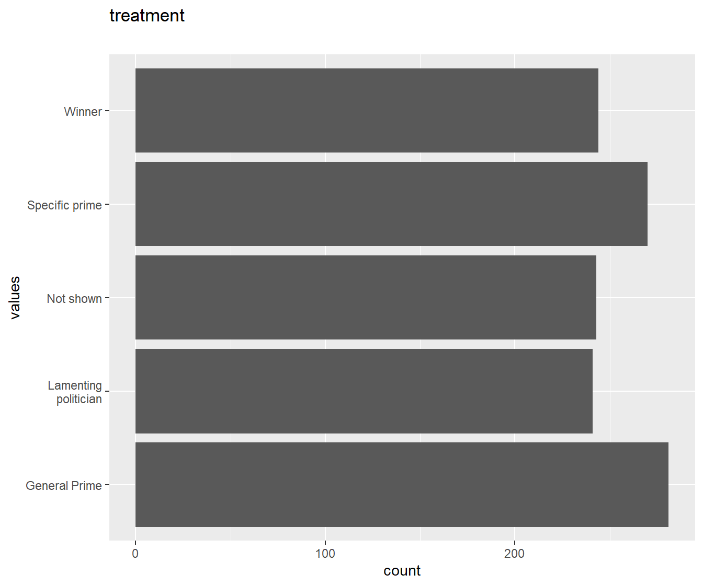
0 missing values.
7.1.30.2 Summary statistics
| name | data_type | n_missing | complete_rate | n_unique | empty | min | max | whitespace | format.spss | label |
|---|---|---|---|---|---|---|---|---|---|---|
| treatment | character | 0 | 1 | 5 | 0 | 6 | 20 | 0 | A20 | NA |
7.1.31 favorability
7.1.31.1 Distribution
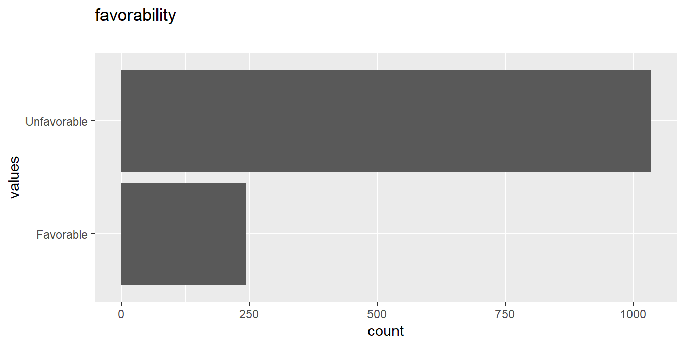
0 missing values.
7.1.31.2 Summary statistics
| name | data_type | n_missing | complete_rate | n_unique | empty | min | max | whitespace | format.spss | label |
|---|---|---|---|---|---|---|---|---|---|---|
| favorability | character | 0 | 1 | 2 | 0 | 9 | 11 | 0 | A11 | NA |
7.1.32 mcheck_favorability
7.1.32.1 Distribution
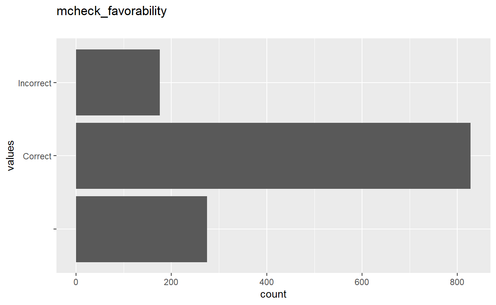
0 missing values.
7.1.32.2 Summary statistics
| name | data_type | n_missing | complete_rate | n_unique | empty | min | max | whitespace | format.spss | label |
|---|---|---|---|---|---|---|---|---|---|---|
| mcheck_favorability | character | 0 | 1 | 3 | 275 | 0 | 9 | 0 | A9 | NA |
7.1.33 imp_accept2
7.1.33.1 Distribution
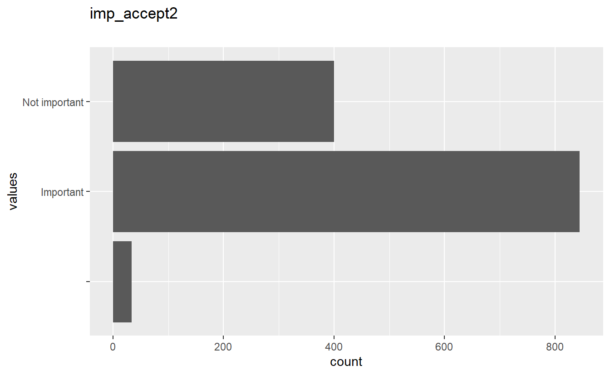
0 missing values.
7.1.33.2 Summary statistics
| name | data_type | n_missing | complete_rate | n_unique | empty | min | max | whitespace | format.spss | label |
|---|---|---|---|---|---|---|---|---|---|---|
| imp_accept2 | character | 0 | 1 | 3 | 34 | 0 | 13 | 0 | A13 | NA |
7.1.34 other_accept2
7.1.34.1 Distribution
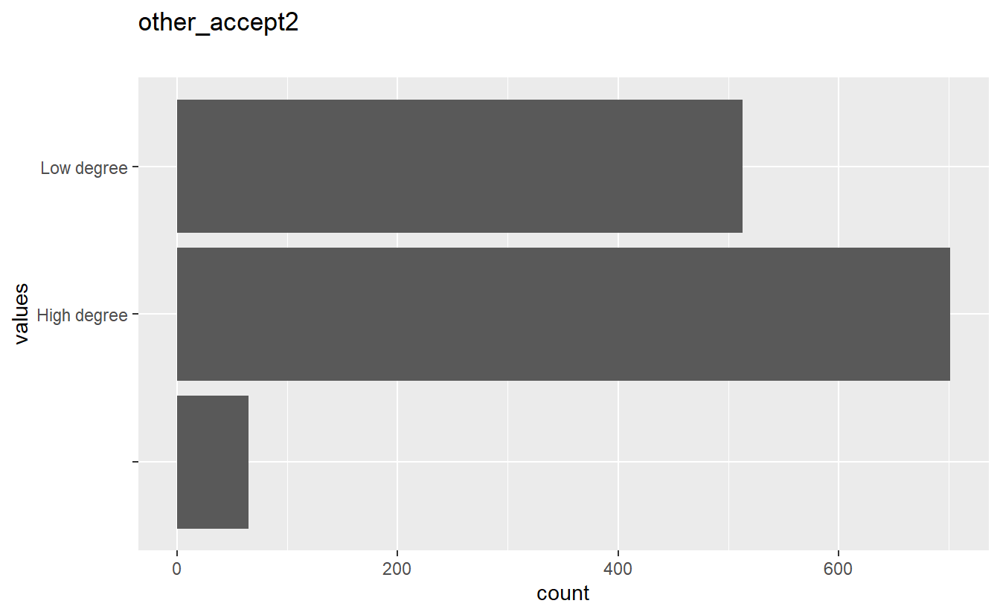
0 missing values.
7.1.34.2 Summary statistics
| name | data_type | n_missing | complete_rate | n_unique | empty | min | max | whitespace | format.spss | label |
|---|---|---|---|---|---|---|---|---|---|---|
| other_accept2 | character | 0 | 1 | 3 | 65 | 0 | 11 | 0 | A11 | NA |
7.1.35 self_accept2
7.1.35.1 Distribution
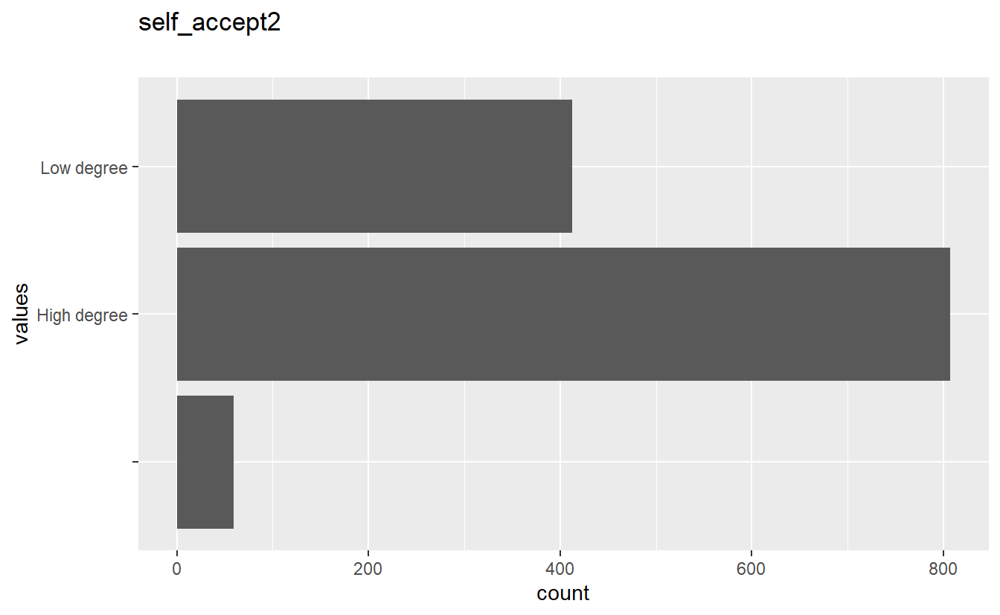
0 missing values.
7.1.35.2 Summary statistics
| name | data_type | n_missing | complete_rate | n_unique | empty | min | max | whitespace | format.spss | label |
|---|---|---|---|---|---|---|---|---|---|---|
| self_accept2 | character | 0 | 1 | 3 | 59 | 0 | 11 | 0 | A11 | NA |
7.1.36 opinion_strength2
7.1.36.1 Distribution
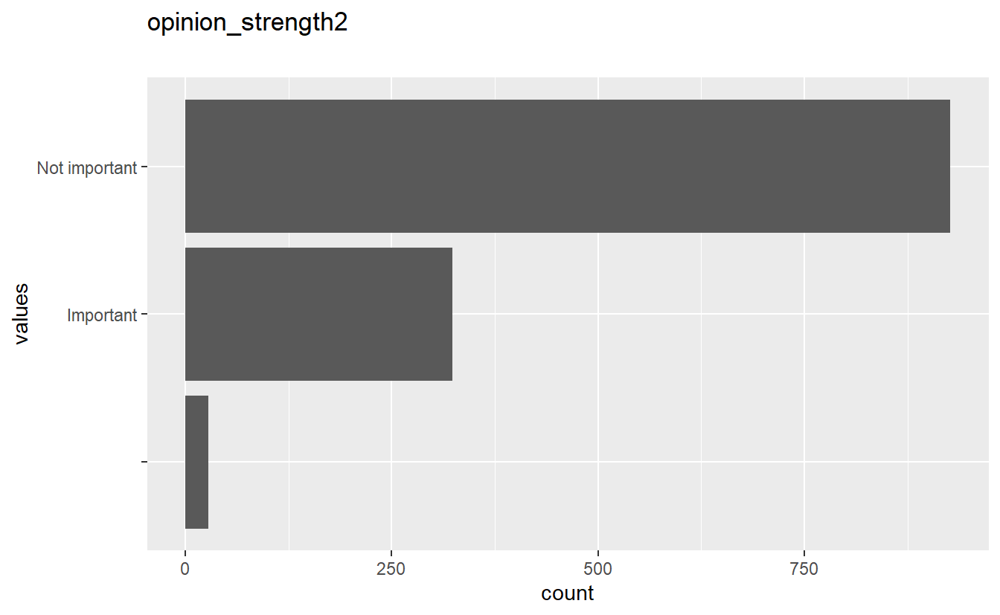
0 missing values.
7.1.36.2 Summary statistics
| name | data_type | n_missing | complete_rate | n_unique | empty | min | max | whitespace | format.spss | label |
|---|---|---|---|---|---|---|---|---|---|---|
| opinion_strength2 | character | 0 | 1 | 3 | 28 | 0 | 13 | 0 | A13 | NA |
7.2 Missingness report
7.3 Codebook table
JSON-LD metadata
The following JSON-LD can be found by search engines, if you share this codebook
publicly on the web.
{
"name": "d2",
"datePublished": "2020-06-03",
"description": "The dataset has N=1279 rows and 36 columns.\n0 rows have no missing values on any column.\n\n\n## Table of variables\nThis table contains variable names, labels, and number of missing values.\nSee the complete codebook for more.\n\n[truncated]\n\n### Note\nThis dataset was automatically described using the [codebook R package](https://rubenarslan.github.io/codebook/) (version 0.8.2).",
"keywords": ["responseid", "imp_accept", "other_accept", "self_accept", "r10panelpad", "opinion_ban", "opinion_strength", "video_mobile", "video_ended", "video_error", "video_paused", "video_played", "video_timespent", "video_report", "r10pad4_comment", "fairness", "accept", "trust", "check_outcome", "check_politician", "r10pad1_9_backward_1", "r10pad1_9_backward_2", "r10pad1_9_backward_3", "r10pad1_9_backward_4", "r10pad1_9_backward_5", "r10pad1_9_backward_6", "r10pad1_9_backward_7", "r10pad1_9_backward_8", "video", "treatment", "favorability", "mcheck_favorability", "imp_accept2", "other_accept2", "self_accept2", "opinion_strength2"],
"@context": "http://schema.org/",
"@type": "Dataset",
"variableMeasured": [
{
"name": "responseid",
"@type": "propertyValue"
},
{
"name": "imp_accept",
"description": "How important is it to accept decisions about important social issues adopted by politicians/authorities",
"value": "1. Very important,\n2. Important,\n3. Somewhat important,\n4. Slightly important,\n5. Not important at all,\n97. No answer,\n98. Not asked",
"maxValue": 98,
"minValue": 1,
"@type": "propertyValue"
},
{
"name": "other_accept",
"description": "To what extent do people in Norway accept decisions about important social issues adopted by politicians/authorities",
"value": "1. To a very great extent,\n2. To a great extent,\n3. Somewhat,\n4. To a small extent,\n5. Not at all,\n97. No answer,\n98. Not asked",
"maxValue": 98,
"minValue": 1,
"@type": "propertyValue"
},
{
"name": "self_accept",
"description": "Do you accept decisions about important social issues adopted by politicians/authorities?",
"value": "1. To a very great extent,\n2. To a great extent,\n3. Somewhat,\n4. To a small extent,\n5. Not at all,\n97. No answer,\n98. Not asked",
"maxValue": 98,
"minValue": 1,
"@type": "propertyValue"
},
{
"name": "r10panelpad",
"description": "[Defines sub-group: panelpad. These are respondents who have responded to R9PAD1-3 but where u!=4]\r\n",
"value": "0. Historical conditions not fulfilled,\n1. Historical conditions fulfilled",
"maxValue": 1,
"minValue": 0,
"@type": "propertyValue"
},
{
"name": "opinion_ban",
"@type": "propertyValue"
},
{
"name": "opinion_strength",
"description": "How important is a begging ban for you.",
"value": "1. Very important,\n2. Important,\n3. Fairly important,\n4. Not very important,\n5. Not at all important,\n97. No answer,\n98. Not asked",
"maxValue": 98,
"minValue": 1,
"@type": "propertyValue"
},
{
"name": "video_mobile",
"description": "[Asked if panelPAD=1. Background variable for r10pad3 (video). Detects whether or not the respondent is using a mobile device]\r\n",
"value": "0. other,\n1. mobile",
"maxValue": 1,
"minValue": 0,
"@type": "propertyValue"
},
{
"name": "video_ended",
"description": "[Asked if panelPAD=1. Background variable for r10pad3 (video). Counter for the event \"video ended\"]\r\n",
"@type": "propertyValue"
},
{
"name": "video_error",
"description": "[Asked if panelPAD=1. Background variable for r10pad3 (video). Counter for the event \"video error\"]\r\n",
"@type": "propertyValue"
},
{
"name": "video_paused",
"description": "[Asked if panelPAD=1. Background variable for r10pad3 (video). Counter for the event \"video paused\"]\r\n",
"@type": "propertyValue"
},
{
"name": "video_played",
"description": "[Asked if panelPAD=1. Background variable for r10pad3 (video). Counter for the event \"video played\"]\r\n",
"@type": "propertyValue"
},
{
"name": "video_timespent",
"description": "[Asked if panelPAD=1. Background variable for r10pad3 (video). Calculated time spent in the video node]\r\n",
"@type": "propertyValue"
},
{
"name": "video_report",
"description": "What was the recording like?",
"value": "1. I had both sound and images,\n2. I had sound, but no images,\n3. I had images, but no sound,\n4. I had neither sound nor images,\n5. Something else prevented me from playing the video,\n97. No answer,\n98. Not asked",
"maxValue": 98,
"minValue": 1,
"@type": "propertyValue"
},
{
"name": "r10pad4_comment",
"description": "Comments about the recording. [Data withheld for the sake of anonymity]",
"@type": "propertyValue"
},
{
"name": "fairness",
"description": "How fair was the way the decision was made.",
"value": "1. Very fair,\n2. Fair,\n3. Quite fair,\n4. Not very fair,\n5. Not at all fair,\n97. No answer,\n98. Not asked",
"maxValue": 98,
"minValue": 1,
"@type": "propertyValue"
},
{
"name": "accept",
"description": "How willing are you to accept the outcome of the decision.",
"value": "1. Very willing,\n2. Willing,\n3. Fairly willing,\n4. Not very willing,\n5. Not at all willing,\n97. No answer,\n98. Not asked",
"maxValue": 98,
"minValue": 1,
"@type": "propertyValue"
},
{
"name": "trust",
"description": "Confidence in the politicians making the decision.",
"value": "1. Very high confidence,\n2. High confidence,\n3. Some confidence,\n4. Low confidence,\n5. No confidence at all,\n97. No answer,\n98. Not asked",
"maxValue": 98,
"minValue": 1,
"@type": "propertyValue"
},
{
"name": "check_outcome",
"description": "Outcome in video in line with own view on municipal begging ban.",
"value": "1. Yes,\n2. No,\n3. Don't remember,\n4. Don't know,\n97. No answer,\n98. Not asked",
"maxValue": 98,
"minValue": 1,
"@type": "propertyValue"
},
{
"name": "check_politician",
"description": "Picture included at the end of video.",
"value": "1. Yes, this image was included in the video,\n2. No, this image was not included in the video,\n97. No answer,\n98. Not asked",
"maxValue": 98,
"minValue": 1,
"@type": "propertyValue"
},
{
"name": "r10pad1_9_backward_1",
"description": "Return button used: R10PAD9 -> R10PAD8",
"value": "1. Yes, return button used from R10PAD9 -> R10PAD8 ",
"maxValue": 1,
"minValue": 1,
"@type": "propertyValue"
},
{
"name": "r10pad1_9_backward_2",
"description": "Return button used: R10PAD8 -> R10PAD7",
"value": "1. Yes, return button used from R10PAD8 -> R10PAD7",
"maxValue": 1,
"minValue": 1,
"@type": "propertyValue"
},
{
"name": "r10pad1_9_backward_3",
"description": "Return button used: R10PAD7 -> R10PAD6",
"value": "1. Yes, return button used from R10PAD7 -> R10PAD6 ",
"maxValue": 1,
"minValue": 1,
"@type": "propertyValue"
},
{
"name": "r10pad1_9_backward_4",
"description": "Return button used: R10PAD6 -> R10PAD5",
"value": "1. Yes, return button used from R10PAD6 -> R10PAD5",
"maxValue": 1,
"minValue": 1,
"@type": "propertyValue"
},
{
"name": "r10pad1_9_backward_5",
"description": "Return button used: R10PAD5 -> R10PAD4",
"value": "1. Yes, return button used from R10PAD5 -> R10PAD4",
"maxValue": 1,
"minValue": 1,
"@type": "propertyValue"
},
{
"name": "r10pad1_9_backward_6",
"description": "Return button used: R10PAD4 -> R10PAD3",
"value": "1. Yes, return button used from R10PAD4 -> R10PAD3",
"maxValue": 1,
"minValue": 1,
"@type": "propertyValue"
},
{
"name": "r10pad1_9_backward_7",
"description": "Return button used: R10PAD3 -> R10PAD2",
"value": "1. Yes, return button used from R10PAD3 -> R10PAD2 ",
"maxValue": 1,
"minValue": 1,
"@type": "propertyValue"
},
{
"name": "r10pad1_9_backward_8",
"description": "Return button used: R10PAD2 -> R10PAD1",
"value": "1. Yes, return button used from R10PAD2 -> R10PAD1",
"maxValue": 1,
"minValue": 1,
"@type": "propertyValue"
},
{
"name": "video",
"@type": "propertyValue"
},
{
"name": "treatment",
"@type": "propertyValue"
},
{
"name": "favorability",
"@type": "propertyValue"
},
{
"name": "mcheck_favorability",
"@type": "propertyValue"
},
{
"name": "imp_accept2",
"@type": "propertyValue"
},
{
"name": "other_accept2",
"@type": "propertyValue"
},
{
"name": "self_accept2",
"@type": "propertyValue"
},
{
"name": "opinion_strength2",
"@type": "propertyValue"
}
]
}`